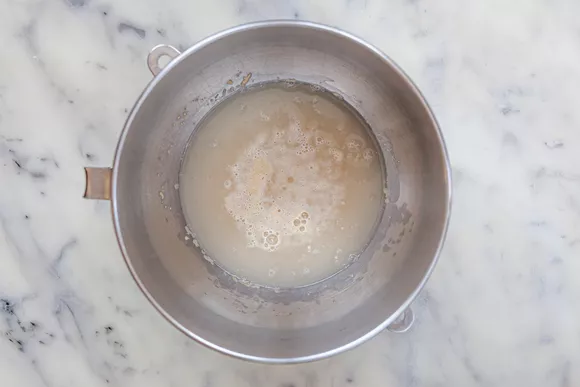
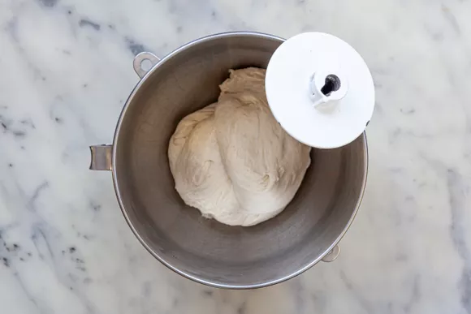

Homemade Pizza & Pizza Dough
Make perfect pizza at home with this classic homemade pizza recipe, including a pizza dough recipe, topping suggestions, and step-by-step instructions with photos.
What to do when your 8-year old nephew comes to visit? Make pizza, of course!
Well, not of course, actually. I didn't think of it until we exhausted Sorry, Monopoly, and gin rummy.
But it did turn out to be a brilliant idea as my father had just received a baking stone for Christmas, and my nephew loves pizza.
I told him if he helped me make it I would talk about him on my website and he would be famous. That seemed to get his attention.
He thought the dough was "slimy and gross" but he loved picking his own toppings, and the finished product was "awesome".
Pizza Dough: Makes enough dough for two 10-12 inch pizzas
- 1 1/2 cups (355 ml) warm water (105°F-115°F)
- 1 package (2 1/4 teaspoons) active dry yeast
- 3 3/4 cups (490g) bread flour
- 2 tablespoons extra virgin olive oil (omit if cooking pizza in a wood-fired pizza oven)
- 2 teaspoons kosher salt
- 1 teaspoon sugar
Pizza Ingredients and Topping Options
- Extra virgin olive oil
- Cornmeal (to help slide the pizza onto the pizza stone)
- Tomato sauce (smooth or pureed)
- Firm mozzarella cheese, grated
- Fresh soft mozzarella cheese, separated into small clumps
- Fontina cheese, grated
- Parmesan cheese, grated
- Feta cheese, crumbled
- Mushrooms, very thinly sliced if raw, otherwise first sautéed
- Bell peppers, stems and seeds removed, very thinly sliced
- Italian pepperoncini, thinly sliced
- Italian sausage, cooked ahead and crumbled
- Sliced black olives
- Chopped fresh basil
Baby arugula, tossed in a little olive oil, added as pizza comes out of the oven
Pesto
Pepperoni, thinly sliced
Onions, thinly sliced raw or caramelized
Ham, thinly sliced
Making the Pizza Dough
- Proof the yeast:
Place the warm water in the large bowl of a heavy duty stand mixer. Sprinkle the yeast over the warm water and let it sit for 5 minutes until the yeast is dissolved.
After 5 minutes stir if the yeast hasn't dissolved completely. The yeast should begin to foam or bloom, indicating that the yeast is still active and alive.
(Note that if you are using "instant yeast" instead of "active yeast", no proofing is required. Just add to the flour in the next step.)

- Make and knead the pizza dough:
Add the flour, salt, sugar, and olive oil, and using the mixing paddle attachment, mix on low speed for a minute. Then replace the mixing paddle with the dough hook attachment.
Knead the pizza dough on low to medium speed using the dough hook about 7-10 minutes.
If you don't have a mixer, you can mix the ingredients together and knead them by hand.
The dough should be a little sticky, or tacky to the touch. If it's too wet, sprinkle in a little more flour.

Return to top
return to home page